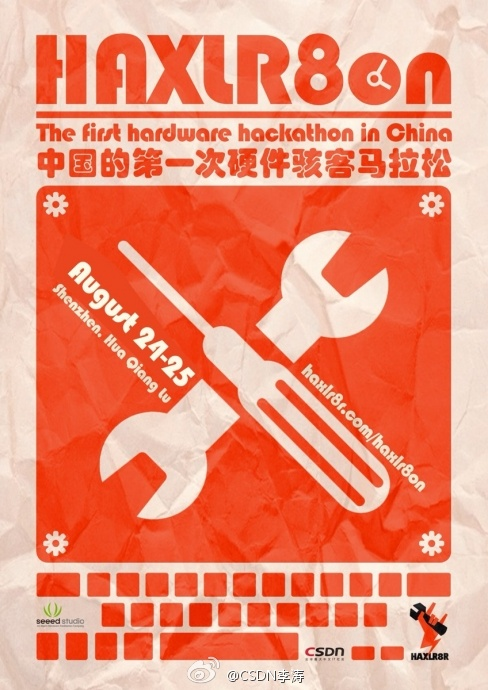

解释得真不错。//@个体小知：cracker是坏人 hacker是怪人//@锅巴GG不唠嗑: hacker为了乐趣，cracker为了目的 //@Ada李力:骇客（cracker）是贬义词，黑客（hacker）是褒义词。@李涛TonyLi:Finally，终于，中国的第一次硬件骇客马拉松在CSDN，Seeed Studio，HAXLR8R的组织下，确定于8月24-25在深圳举办，并有一家神秘的冠名方，将于近期公布，欢迎各种形式的赞助与合作！Let's Hard&Rock! 